11 Fitting features
For more than three centuries, there has been a standard calculus model of an everyday phenomenon: a hot object such as a cup of coffee cooling off to room temperature. The model, called Newton’s Law of Cooling, posits that the rate of cooling is proportional to the difference between the object’s temperature and the ambient temperature. The technology for measuring temperature (Figure 11.1) was rudimentary in Newton’s era, raising the question of how Newton formulated a quantitative theory of cooling. (we will return to this question in Chapter Section 12.)

Using today’s technology, Prof. Stan Wagon of Macalester College investigated the accuracy of Newton’s “Law.” ?fig-fun-4-intro-1 shows some of Wagon’s data from experiments with cooling water. He poured boiling water from a kettle into an empty room-temperature mug (26 degrees C) and measured the temperature of the water over the next few hours.
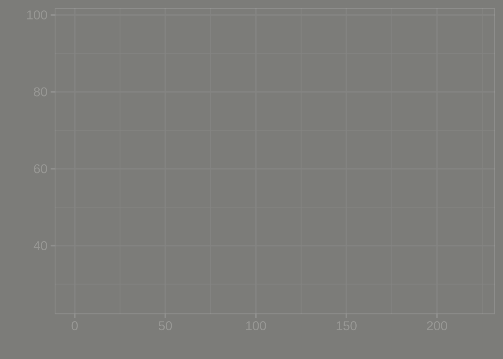
This chapter is about fitting, finding parameters that will align the functions with the data such as in Figure 11.2. In this chapter, we will work the the exponential, sinusoid, and gaussian functions. In Chapter Section 14 we will consider the power-law and logarithm functions.
Function shapes for this chapter
| Gaussian | Sinusoid | Exponential |
|---|---|---|
 |
 |
 |
In every instance, the first step, before finding parameters, is to determine that the pattern shown in the data is a reasonable match to the shape of the function you are considering. Here’s a reminder of the shapes of the functions we will be fitting to data in this chapter. If the shapes don’t match, there is little point in looking for the parameters to fit the data!
11.1 Gaussian
The ability to perceive color comes from “cones”: specialized light-sensitive cells in the retina of the eye. Human color perception involves three sets of cones. The L cones are most sensitive to relatively long wavelengths of light near 570 nanometers. The M cones are sensitive to wavelengths near 540 nm, and the S cones to wavelengths near 430nm.
The current generation of Landsat satellites uses nine different wavelength-specific sensors. This makes it possible to distinguish features that would be undifferentiated by the human eye.

Back toward Earth, birds have five sets of cones that cover a wider range of wavelengths than humans. (Figure 11.4) Does this give them a more powerful sense of the differences between natural features such as foliage or plumage? One way to answer this question is to take photographs of a scene using cameras that capture many narrow bands of wavelengths. Then, knowing the sensitivity spectrum of each set of cones, new “false-color” pictures can be synthesized recording the view from each set.1

Creating the false-color pictures on the computer requires a mathematical model of the sensitivities of each type of cone. The graph of each sensitivity function resembles a Gaussian function.
The Gaussian has two parameters: the “mean” and the “sd” (short for standard deviation). It is straightforward to estimate values of the parameters from a graph, as in Figure 11.5.
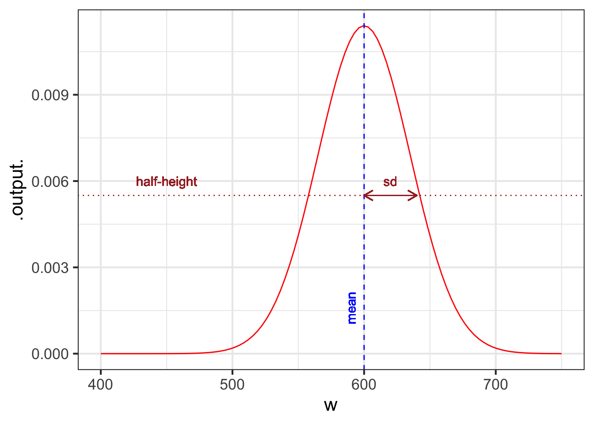
The parameter “mean” is the location of the peak. The standard deviation is, roughly, half the width of the graph at a point halfway down from the peak.
11.2 Sinusoid
We will use three parameters for fitting a sinusoid to data: \[A \sin\left(\frac{2\pi}{P}\right) + B\] where
- \(A\) is the “amplitude”
- \(B\) is the “baseline”
- \(P\) is the period.
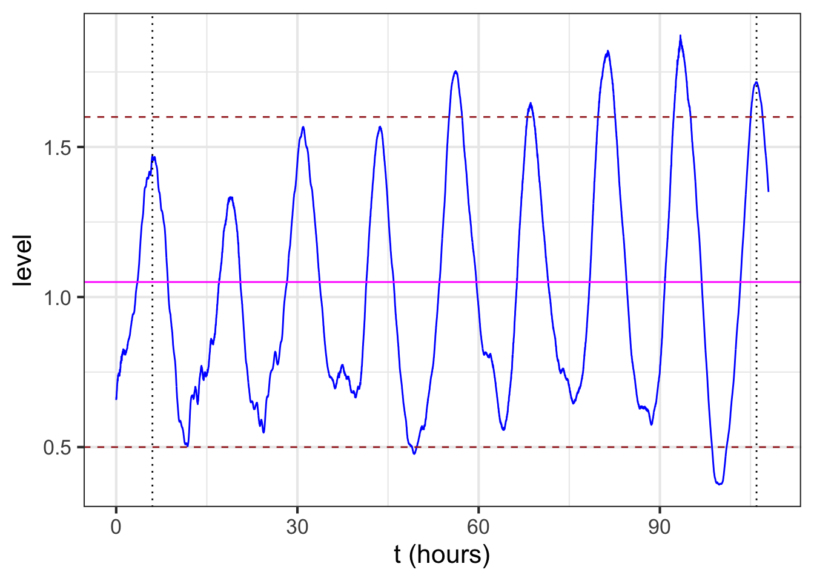
The baseline for the sinusoid is the value mid-way between the top of the oscillations and the bottom. For example, Figure 8.3 (reproduced in the margin) shows the sinusoidal-like pattern of tide levels. Dashed horizontal lines (\(\color{brown}{\text{brown}}\)) have been drawn roughly going through the top of the oscillation and the bottom of the oscillation. The baseline (\(\color{magenta}{\text{magenta}}\)) will be halfway between these top and bottom levels.
The amplitude is the vertical distance between the baseline and the top of the oscillations. Equivalently, the amplitude is half the vertical distance between the top and the bottom of the oscillations.
In a pure, perfect sinusoid, the top of the oscillation—the peaks—is the same for every cycle, and similarly with the bottom of the oscillation—the troughs. The data in Figure 8.3 is only approximately a sinusoid so the top and bottom have been set to be representative. In Figure 11.6, the top of the oscillations is marked at level 1.6, the bottom at level 0.5. The baseline is therefore \(B \approx = (1.6 + 0.5)/2 = 1.05\). The amplitude is \(A = (1.6 - 0.5)/2 = 1.1/2 = 0.55\).
To estimate the period from the data, mark the input for a distinct point such as a local maximum, then count off one or more cycles forward and mark the input for the corresponding distinct point for the last cycle. For instance, in Figure 11.6, the tide level reaches a local maximum at an input of about 6 hours, as marked by a black dotted line. Another local maximum occurs at about 106 hours, also marked with a black dotted line. In between those two local maxima you can count \(n=8\) cycles. Eight cycles in \(106-6 = 100\) hours gives a period of \(P = 100/8 = 12.5\) hours.
11.3 Exponential
To fit an exponential function, we estimate the three parameters: \(A\), \(B\), and \(k\) in \[A \exp(kt)+ B\]
| Exp. growth | Exp. decay | . | . |
|---|---|---|---|
 |
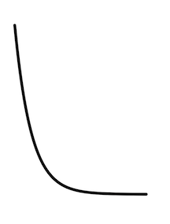 | . | . |
Exponential decay is a left-to-right flip of exponential growth.
Figure 11.2 illustrates the procedure. The first question to ask is whether the pattern shown by the data resembles an exponential function. After all, the exponential pattern book function grows in output as the input gets bigger, whereas the water temperature is getting smaller—the word decaying is used—as time increases. To model exponential decay, use \(\exp(-k t)\), where the negative sign effectively flips the pattern-book exponential left to right.
The exponential function has a horizontal asymptote for negative inputs. The left-to-right flipped exponential \(\exp(-k t)\) also has a horizontal asymptote, but for positive inputs.
The parameter \(B\), again called the “baseline,” is the location of the horizontal asymptote on the vertical axis. Figure 11.2 suggests the asymptote is located at about 25 deg. C. Consequently, the estimated value is \(B \approx 25\) deg C.
11.3.1 Estimating A
The parameter \(A\) can be estimated by finding the value of the data curve at \(t=0\). In Figure Figure 11.7 that is just under 100 deg C. From that, subtract off the baseline you estimated earlier: (\(B = 25\) deg C). The amplitude parameter \(A\) is the difference between these two: \(A = 99 - 25 = 74\) deg C.
11.3.2 Estimating k
The exponential has a unique property of “doubling in constant time” as described in Section Section 5.2. We can exploit this to find the parameter \(k\) for the exponential function.
The procedure starts with your estimate of the baseline for the exponential function. In Figure 11.7 the baseline has been marked in \(\color{magenta}{\text{magenta}}\) with a value of 25 deg C.
Pick a convenient place along the horizontal axis. You want a place such that the distance of the data from the baseline to be pretty large. In Figure 11.7 the convenient place was selected at \(t=25\).
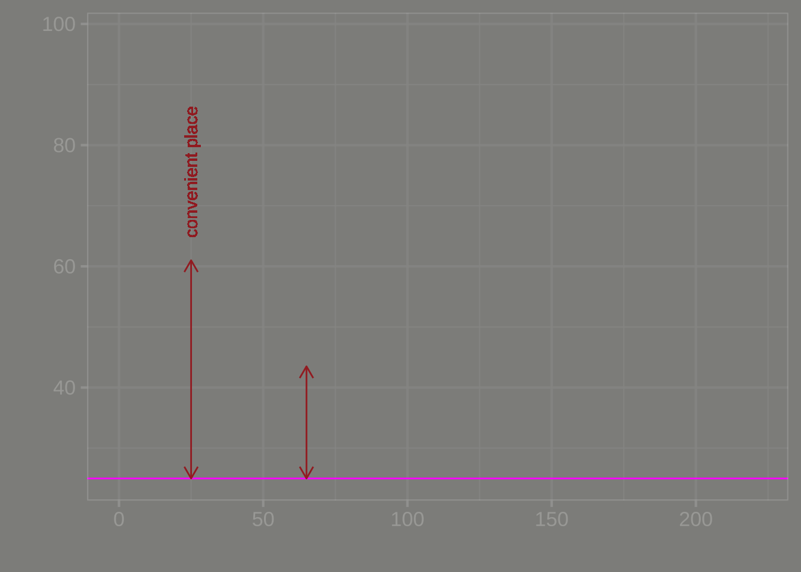
Measure the vertical distance from the baseline at the convenient place. In Figure 11.7 the data curve has a value of about 61 deg C at the convenient place. This is \(61-25 = 36\) deg C from the baseline.
Calculate half of the value from (c). In Figure 11.7 this is \(36/2=18\) deg C. But you can just as well do the calculation visually, by marking half the distance from the baseline at the convenient place.
Scan horizontally along the graph to find an input where the vertical distance from the data curve to the baseline is the value from (d). In Figure 11.7 that half-the-vertical-distance input is at about \(t=65\). Then calculate the horizontal distance between the two vertical lines. In Figure 11.7 that is \(65 - 25 = 40\) minutes. This is the doubling time. Or, you might prefer to call it the “half-life” since the water temperature is decaying over time.
Calculate the magnitude \(\|k\|\) as \(\ln(2)\) divided by the doubling time from (e). That doubling time is 40 minutes, so \(\|k\|= \ln(2) / 40 = 0.0173\). We already know that the sign of \(k\) is negative since the pattern shown by the data is exponential decay toward the baseline. So, \(k=-0.0173\).
11.4 Graphics layers
When fitting a function to data, it is wise to plot out the resulting function on top of the data. This involves making graphics with two layers, as described in Chapter Section 7. As a reminder, here is an example comparing the cooling-water data to the exponential function we fitted in Section Section 11.3.
The fitted function we found was \[T_{water}(t) \equiv 74 \exp(-0.0173 t) + 25\] where \(T\) stands for “temperature.”
To compare \(T_{water}()\) to the data, we will first plot out the data with gf_point(), then add a slice plot of the function. We will also show a few bells and whistles of plotting: labels, colors, and such.
T_water <- makeFun(74*exp(-0.0173*t) + 25 ~ t)
gf_point(temp ~ time, data=CoolingWater, alpha=0.5 ) %>%
slice_plot(T_water(time) ~ time, color="blue") %>%
gf_labs(x = "Time (minutes)", y="Temperature (deg. C)")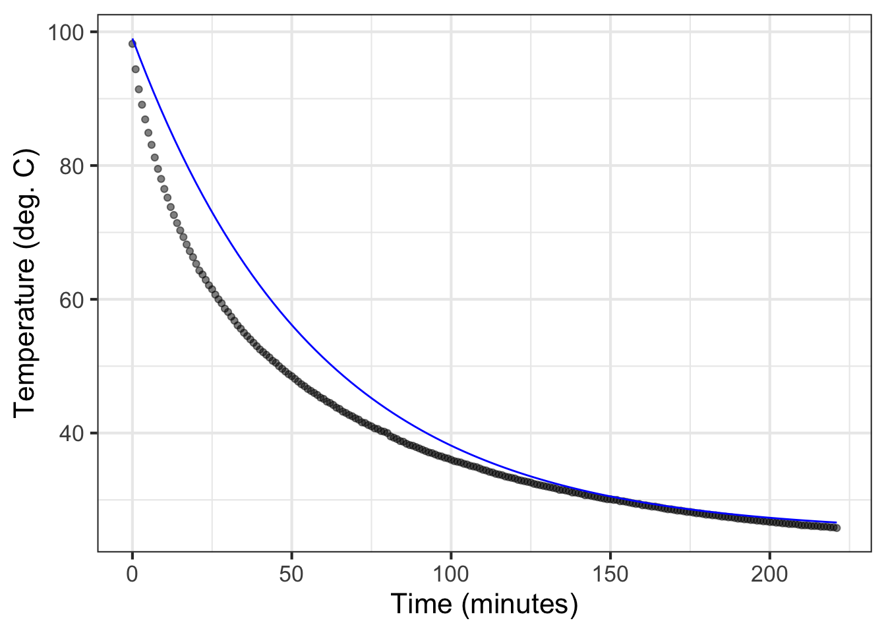
The slice_plot() command inherited the domain interval from the gf_point() command. This happens only when the name of the input used in slice_plot() is the same as that in gf_point(). (it is time in both.) You can add additional data or function layers by extending the pipeline.
By the way, the fitted exponential function is far from a perfect match to the data. We will return to this mismatch in Chapter Section 16 when we explore the modeling cycle.
11.5 Fitting other pattern-book functions
This chapter has looked at fitting the exponential, sinusoid, and Gaussian functions to data. Those are only three of the nine pattern-book functions. What about the others?
Shapes of the pattern-book functions
| const | prop | square | recip | gaussian | sigmoid | sinusoid | exp | ln |
|---|---|---|---|---|---|---|---|---|
 |
 |
 |
 |
|
 |
|
|
 |
In Blocks ?sec-differentiation-part and ?sec-accumulation-part, you will see how the Gaussian and the sigmoid are intimately related to one another. Once you see that relationship, it will be much easier to understand how to fit a sigmoid to data.
The remaining five pattern-book functions, the ones we haven’t discussed in terms of fitting, are the logarithm and the four power-law functions included in the pattern-book set. In Chapter Section 14 we will introduce a technique for estimating from data the exponent of a single power-law function.
In high school, you may have done exercises where you estimated the parameters of straight-line functions and other polynomials from graphs of those functions. In professional practice, such estimations are done with an entirely different and completely automated method called regression. We will introduce regression briefly in Chapter Section 16. However, the subject is so important that all of Block ?sec-vectors-linear-combinations is devoted to it and its background.
11.6 Drill
## Scale for 'x' is already present. Adding another scale for 'x', which will
## replace the existing scale.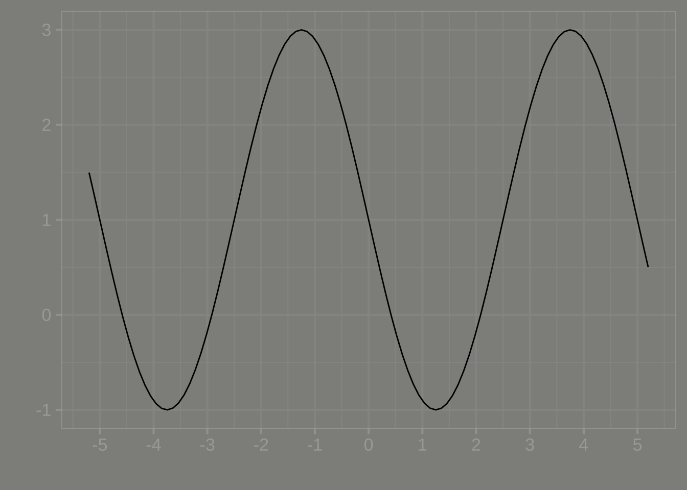
Part 1 What’s the period of the sinusoid in Figure 11.9?
1 2 3 4 5
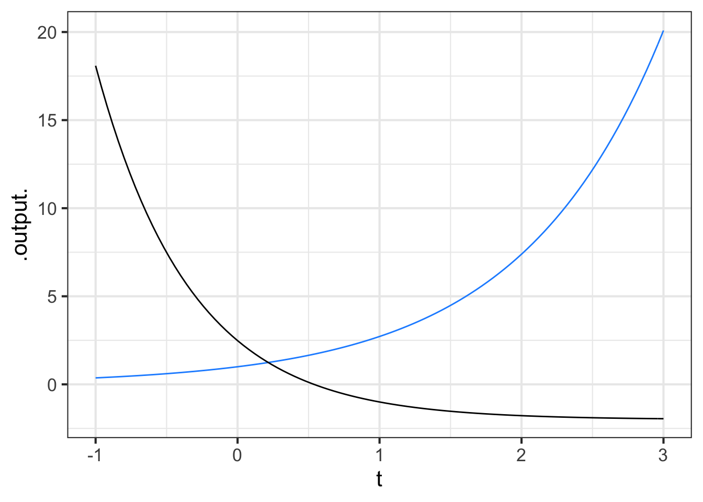
Part 2 Which function(s) in Figure 11.9 have \(k < 0\)?
blue black both neither
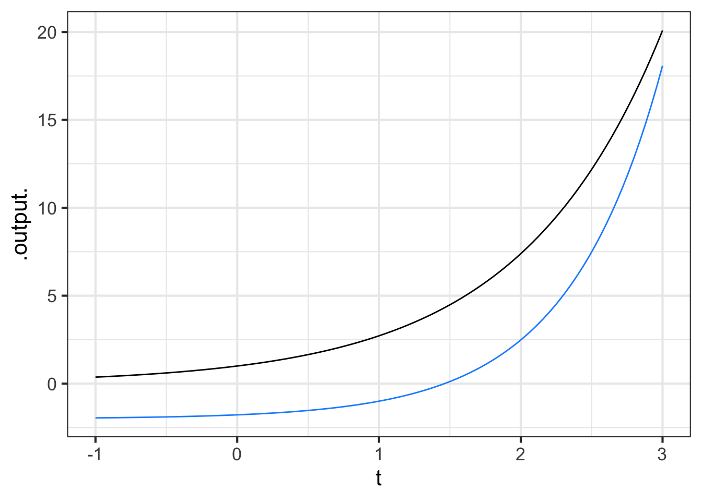
Part 3 Which function(s) in Figure 11.11 have \(k < 0\)?
blue black both neither
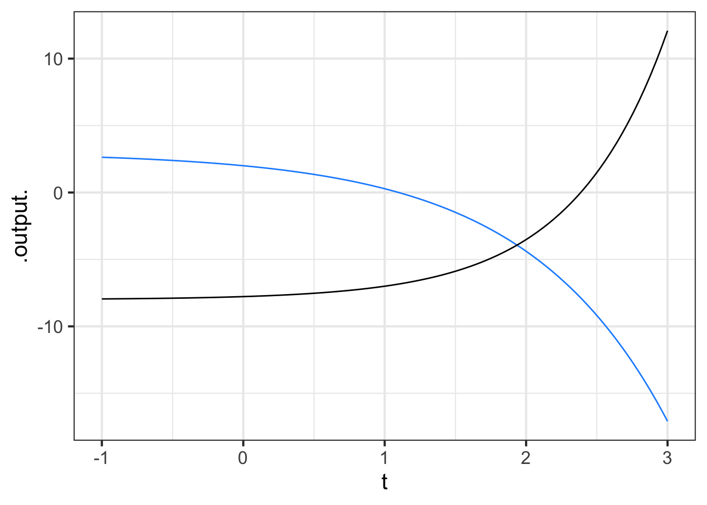
Part 4 Which function(s) in Figure 11.12 have \(k < 0\)?
blue black both neither
Part 5 One of the functions in Figure 11.10 has a half-life, the other a doubling time. Which is bigger, the half-life or the doubling time?
- doubling time
- half-life
- about the same
- they aren’t exponential, so the concept of half-life/doubling-time does not apply.
Part 6 In this book, what is meant by the word “variable”?
- it is the same as output.
- it is the same as input.
- A column in a data table.
11.7 Exercises
Exercise 11.01
The table shows eight of the pattern-book function shapes.
::: {#tbl-pattern-book-shapes .column-page-inset-right} prop | square | recip | gaussian :–:|:–:|:–:|:–:|:–:|:–:|:–:|:–: | | | | | | sigmoid | sinusoid | exp | ln
Identify which of the eight shapes will remain unaltered even when flipped left-to-right.
Identify which of the eight shapes will remain unaltered if flipped left-to-right followed by a top-to-bottom flip.
Identify which of the eight shapes will give the same result when flipped left-to-right or top-to-bottom (but not both!).
Compare the left-to-right then top-to-bottom flipped exponential to the logarithm function. Is the doubly flipped exponential equivalent to the logarithm? Explain your reasoning.
Exercise 11.04
Auckland, New Zealand is in a field of dormant volcanos. The highest, at 193 meters above sea level, is Maungawhau. Formerly, tourists could drive to the peak and look down into the crater, as seen in the picture.

{kind=link}
The initial creator of R, Ross Ihaka, teaches at the University of Auckland. His digitization of a topographic map is easily plotted, as here:
The z-axis is height and is in meters. The x- and y-axes are latitude and longitude, measured in 10-meter units from a reference point. (So, \(x=10\) is 100 meters from \(x=20\).)
Get used to the presentation of the surface plot and how to rotate it and zoom in. To see the crater more clearly, you can rotate the surface plot to look straight downwards, effectively presenting you with a color-coded contour plot. Moving the cursor over the surface will display the \(x\) and \(y\) coordinates, as well as the \(z\)-value at that coordinate point.
Part A What is the \((x, y)\) location of the low-point of the crater? (Choose the closest answer.)
\((x=34, y=29)\) \((x=31, y=25)\) \((x=25, y=34)\) \((x=29, y=34)\)
Part B What color is used to designate the lowest elevations?
dark blue green yellow
If you were to climb up Maungawhau, at some point you would be at the same elevation as the low-point of the crater, even though you are outside the crater. Think of the contour that corresponds to that elevation. Let’s call it the “half-way” contour since it is roughly half-way up the volcano.
Part C What is the shape of the “half-way” contour?
a line segment a crescent a closed curve a cross
Imagine that you are filling up the crater with water. At some point, the water rises to a level where it will spill over the lip of the crater.
Part D What is the elevation at which the water will start to spill over the crater lip? (Pick the closest answer.)
169 meters 172 meters 175 meters 178 meters
Question E Explain in terms of the shapes of contours how you can identify the elevation at which the water would spill over the rim.
Exercise 11.05
We’ve created a function named \(\text{twins}(x,y)\) to help you practice making contour plots. You will need to open a sandbox to draw the plot.
Here is some scaffolding for the command:
twins <- mosaic::rfun(~ x + y, seed = 302, n=5)
contour_plot(twins(x, y) ~ x + y, domain(x=c(0,1), y=c(-1,1)))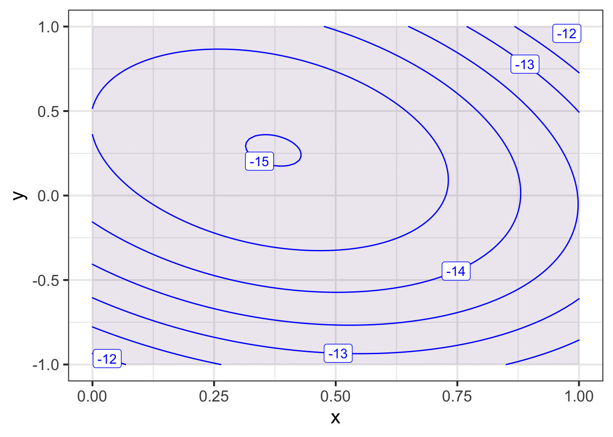
Part A The domain of the plot should be large enough to show a mountain next to a deep hole. Which of these domains will do the job?
domain(x=c(-5, 5), y=c(-5, 5)domain(x=c(1, 5), y=c(1, 5)domain(x=c(1,1), y=c(-1,1)))domain(x=c(5,10), y=c(0,10)))
In a different sandbox (so you can still see the contour plot in the first sandbox), draw a slice through the function along the line \(y=0\). Use the same \(x\)-domain as in the correct answer to the previous question.
In the slice_plot() command below, you will need to replace __tilde-expression___ and __domain__ with the correct syntax.
twins <- mosaic::rfun(~ x + y, seed = 302, n=5)
slice_plot(__tilde-expression__, __domain__)Part B Which of these expressions will accomplish the task?
slice_plot(twins(x, y=0) ~ x, domain(x=c(-5,5)))slice_plot(twins(x) ~ x, domain(y=c(-5, 5)))slice_plot(twins(x, y=0) ~ x, domain(x=c(-5, 5), y=c(-5, 5)))slice_plot(twins(x, y=0) ~ x + y, domain(x=c(-5, 5), y=c(-5, 5)))
Exercise 11.07
PICK UP ON THIS IN ACCUMULATION BLOCK TO calculate the Gini Coefficient.
Income inequality is a matter of perennial political debate. In the US, most people support Social Security, which is an income re-distribution programming dating back almost a century. But other re-distribution policies are controversial. Some believe they are essential to a healthy society, others that the “cure” is worse than the “disease.”
Whatever one’s views, it is helpful to have a way to quantify inequality. There are many ways that this might be done. A mathematically sophisticated one is called the Gini coefficient.
Imagine that society was divided statistically into income groups, from poorest to richest. Each of these income groups consists of a fraction of the population and has, in aggregate, a fraction of the national income. Poor people tend to be many in number but to have a very small fraction of income. Wealthy people are few in number, but have a large fraction of income. The table shows data for US households in 2009:2
| group label | population | aggregate income | cumulative income |
|---|---|---|---|
| poorest | 20% | 3.4% | 3.4% |
| low-middle | 20% | 8.6% | 12.0% |
| middle | 20% | 14.6% | 26.6% |
| high-middle | 20% | 23.2% | 47.8% |
| richest | 20% | 50.2% | 100.0% |
The cumulative income shows the fraction of income of all the people in that group or poorer. The cumulative population adds up the population fraction in that row and previous rows. So, a cumulative population of 60% means “the poorest 60% of the population” which, as the table shows, earn as a group 14.6% of the total income for the whole population.
A function that relates the cumulative population to the cumulative income is called a Lorenz function. The data are graphed in Figure 11.15 and available as the US_income data frame in the SANDBOX. Later, in Figure 11.16, we will fit parameterized functions to the data.
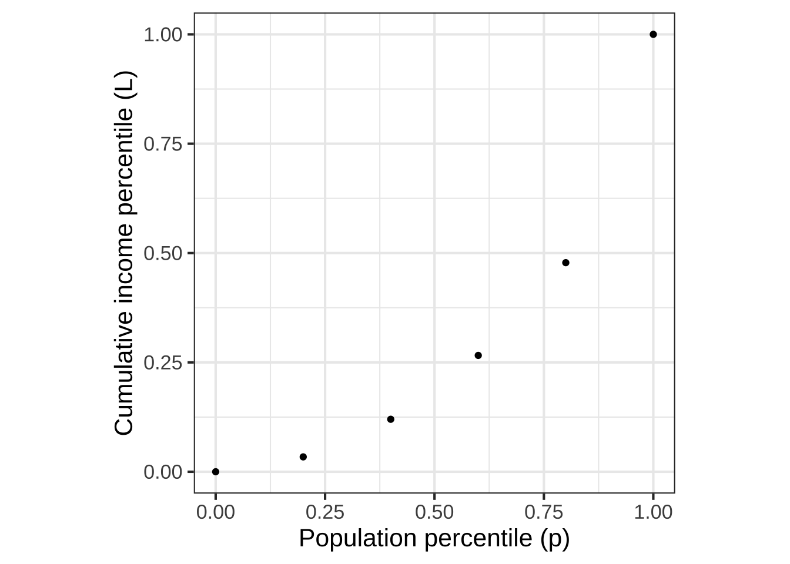
Lorenz curves must:
- Be concave up, which amounts to saying that the curve gets steeper and steeper as the population percentile increases. (Why? Because at any point, poorer people are to the left and richer to the right.)
- Connect (0,0) to (1, 1).
Calling the income percentile \(L\) a function of the population percentile \(p\), a Lorenz function is \(L(p)\) that satisfies the requirements in the previous paragraph. Here are some functions that meet the requirements:
- \(L_b(p) \equiv p^b\) where \(1 \leq b\).
- \(L_q(p) \equiv 1 - (1-p)^q\) where \(0 < q \leq 1\)
Notice that each of these functions has just one parameter. It seems implausible that the workings of a complex society can be summarized with just one number. We can use the curve-polishing techniques that will be introduced in ?chap-fitting-polishing to find the “best” parameter value to match the data.
Lb <- fitModel(income ~ pop^b, data = Income, start=list(b=1.5))
Lq <- fitModel(income ~ 1 - (1-pop)^q, data = Income, start=list(q=0.5))Figure 11.16 compares the fitted functions to the data.
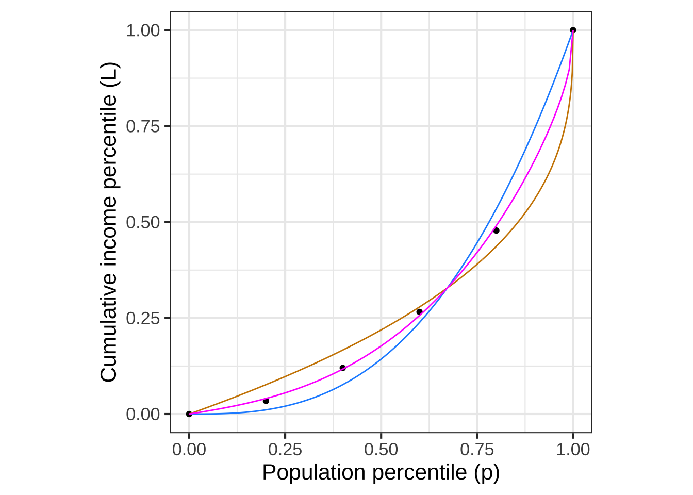
Neither form \(L_b(p)\) or \(L_q(p)\) gives a compelling description of the data. Where should we go from here?
We can provide more parameters by constructing more complicated Lorenz functions. Here are two ways to build a new Lorenz function out of an existing one:
- The product of any two Lorenz functions, \(L_1(p) L_2(p)\) is itself a Lorenz function.
- A linear combination of any two Lorenz functions, \(a L_1(p) + (1-a) L_2(p)\), so long as the scalars add up to 1, is itself a Lorenz function. For instance, the magenta curve in Figure 11.16 is the linear combination of 0.45 times the tan curve plus 0.55 times the blue curve.
Question: Is the composition of two Lorenz functions a Lorenz function? That is, does the composition meet the two requirements for being a Lorenz function?
To get started, figure out whether or not \(L_1(L_2(0)) = 0\) and \(L_1(L_2(1)) = 1\). If the answer is yes, then we need to find a way to compute the concavity of a Lorenz function to determine if the composition will always be concave up. We will need additional tools for this. We will introduce these in Block 2.
Exercise 11.08
These three expressions
\[e^{kt}\ \ \ \ \ 10^{t/d} \ \ \ \ \ 2^{t/h}\]
produce the same value if \(k\), \(d\) and \(h\) have corresponding numerical values.
The code block contains an expression for plotting out \(2^{t/h}\) for \(-4 \leq t \leq 12\) where \(h = 4\). It also plots out \(e^{kt}\) and \(10^{t/d}\)
fa <- makeFun(exp(k*t) ~ t, k = 4)
fc <- makeFun(2^(t/h) ~ t, h = 4)
fb <- makeFun(10^(t/d) ~ t, d = 4)
slice_plot(fa(t) ~ t, domain(t = c(-4, 12))) %>%
slice_plot(fb(t) ~ t, color="blue") %>%
slice_plot(fc(t) ~ t, color = "red") %>%
gf_lims(y = c(0, 8))Your task is to modify the values of d and k such that all three curves lie on top of one another. (Leave h at the value 4.) You can find the appropriate values of d and k to accomplish this by any means you like, say, by using the algebra of exponents or by using trial and error. (Trial and error is a perfectly valid strategy regardless of what your high-school math teachers might have said about “guess and check.” The trick is to make each new guess systematically based on your previous ones and observation of how those previous ones performed.)
After you have found values of k and d that are suited to the task …
Part A What is the numerical value of your best estimate of k?
0.143 0.173 0.283 0.320
Part B What is the numerical value of your best estimate of d?
11.2 11.9 13.3 15.8
Exercise 11.09
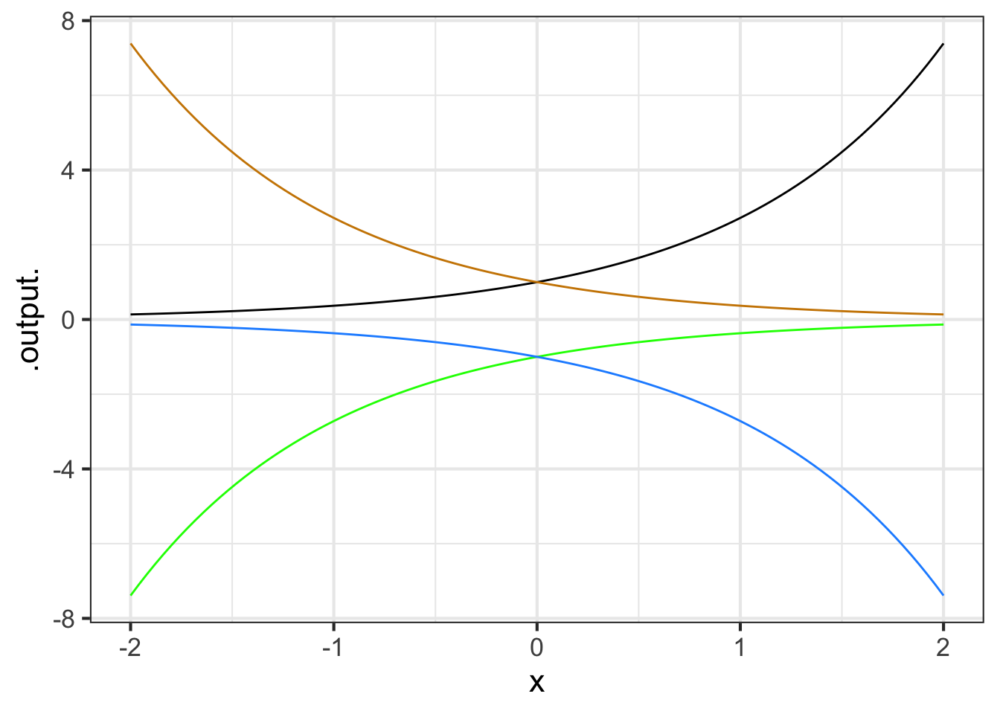
Part A One of the curves in plot (A) is a pattern-book function. Which one?
black blue green tan none of them
Part B Taking \(f()\) to be the pattern-book function in plot (A), which one of the curves is \(f(-x)\)?
black blue green tan none of them
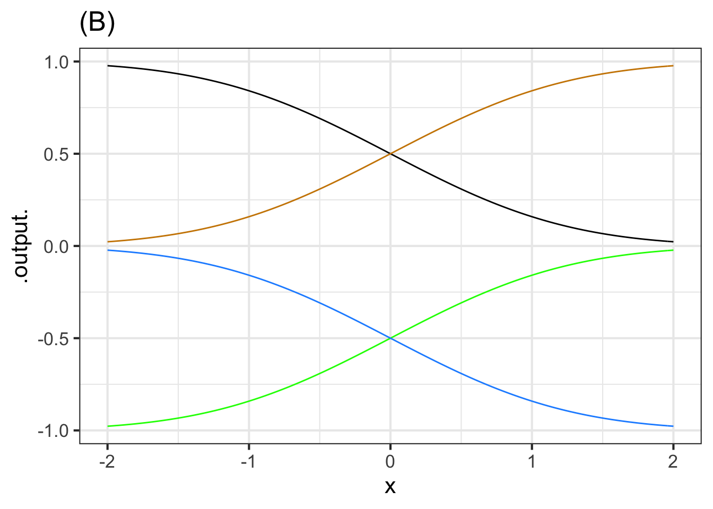
Part C One of the curves in plot (B) is a pattern-book function. Which one?
black blue green tan none of them
Part D Taking \(f()\) to be the pattern-book function in plot (B), which one of the curves is \(-f(x)\)?
black blue green tan none of them

The blue curve in plot (C), as you know, is the sinusoid pattern-book function.
Part E Which of these functions is the green curve?
- \(\sin(-x)\)
- \(-\sin(x)\)
- \(-\sin(-x)\)
- Both \(\sin(-x)\) and \(-\sin(-x)\)
- Both \(\sin(-x)\) and \(-\sin(x)\)
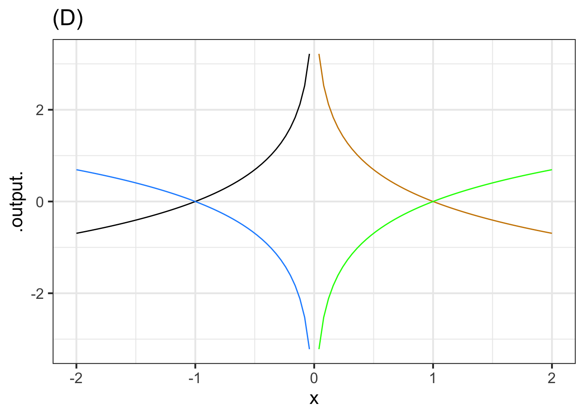
Part F One of the curves in plot (D) is a pattern-book function. Which one?
black dodgerblue green tan none of them
Part G Taking \(f()\) to be the pattern-book function in plot (D), which one of the curves is \(-f(-x)\)?
black dodgerblue green tan none of them
Exercise 11.10
A person breathes in and out roughly every three seconds. The volume \(V\) of air in the person’s lungs varies between a minimum of \(2\) liters and a maximum of \(4\) liters. Assume time \(t\) is measured in seconds.
Remember that a full cycle of the sine wave \(\sin(x)\) involves \(x\) going from its starting value to that value plus \(2 \pi\).
Part A Which of the following is the most appropriate of these models for \(V(t)\)?
- \(V(t) \equiv 2 \sin \left( \frac{\pi}{3} t \right) + 2\)
- \(V(t) \equiv \sin \left( \frac{2\pi}{3} t \right) + 3\)
- \(V(t) \equiv 2 \sin \left( \frac{2\pi}{3} t \right)+ 2\)
- \(V(t) \equiv \sin \left( \frac{\pi}{3} t \right) + 3\)
A respiratory cycle can be divided into two parts: inspiration and expiration. Please do an experiment. Using a clock or watch, breath with a total period of 3 seconds/breath, that is, complete one breath every three seconds. Once you have practiced this and can do it without forcing either phase of breathing, make a rough estimate of what fraction of the cycle is inspiration and what fraction is expiration. (The “correct/incorrect” answers here are right for most people. Your natural respiration might be different.)
Part B Which is true?
- Inspiration lasts longer than expiration
- Expiration lasts longer than inspiration
- Inspiration and expiration each consume about the same fraction of the complete cycle.
Exercise 11.12
The Wikipedia entry on “Common Misconceptions” used to contain this item:
Some cooks believe that food items cooked with wine or liquor will be non-alcoholic, because alcohol’s low boiling point causes it to evaporate quickly when heated. However, a study found that some of the alcohol remains: 25% after 1 hour of baking or simmering, and 10% after 2 hours.
The modeler’s go-to function type for events like the evaporation of alcohol is exponential: The amount of alcohol that evaporates would, under constant conditions (e.g. an oven’s heat), be proportional to the amount of alcohol that hasn’t yet evaporated.
Part A A) Assume that 25% of the alcohol remains after 1 hour? If the process were exponential, how much would remain after 2 hours?
10% 25% 25% of 25% 75% 75% of 75%
Part B B) What is the half-life of an exponential process that decays to 25% after one hour?
15 minutes 30 minutes 45 minutes none of the above
Let’s change pace and think about the “10% after 2 hours” observation. First, recall that the amount left after \(n\) halvings is \(\text{amount.left}(n) \equiv \frac{1}{2}^n\) This is an exponential function with base 1/2.
You’re going to carry out a guess-and-check procedure to find \(n\) that gives \(\text{amount.left}(n) = 0.10\).
Open a sandbox and copy over the scaffolding, which includes the definition of the amount.left() function. We started with a guess of \(n=0\), which is wrong. Change the guess until you get the output 10%.
amount.left <- makeFun((1/2)^n ~ n)
amount.left(0)Part C C) Use amount.left() as defined in the scaffolding to guess-and-check how many halvings it takes to bring something down to 10% of the original amount.
2.58 3.32 3.62 3.94 4.12
Another way to find the input \(n\) that generates an output of 10% is to construct the inverse function to \(\text{amount.left}()\).
The computer already provides you with inverse functions for \(2^n\) and \(e^n\) and \(10^n\). Their names are log2(), log(), and log10() repectively. Using log2(), write a function named log_half() that gives the inverse function to \((1/2)^n\). Remember, the input to the inverse function corresponds to 10%; the output to the \(n\).
log_half <- makeFun( - log2(...your stuff here ...) ~ x)Part D D) The answer you got in part C) is the number of halvings needed to reach 10%. If this number occurs in 2 hours (that is, 120 minutes), what is the half life stated in minutes.
30 35 36 38 42 47
Suppose you compromise between the half-life needed to reach 25% after one hour and the half-life needed to reach 10% after two hours. Use, say, 33 minutes as the compromise half life. Using the sandbox, calculate how much would be left after 1 hour for this compromise half life, and how much left after 2 hours.
Part E E) How much is left after 1 hour and after 2 hours when the half life is 33 minutes?
28% and 8% 31% and 4% 30% and 9% 27% and 9%
Exercise 11.13
The gaussian function is implemented in R with dnorm(x, mean, sd). The input called mean corresponds to the center of the hump. The input called sd gives the width of the hump.
In a sandbox, make a slice plot of dnorm(x, mean=0, sd=1). By varying the value of width, figure out how you could read that value directly from the graph.
slice_plot(dnorm(x, mean=0, sd=1) ~ x,
domain(x = c(-4, 4)))In the plot below, one of the double-headed arrows represents the sd parameter. The other arrows are misleading.
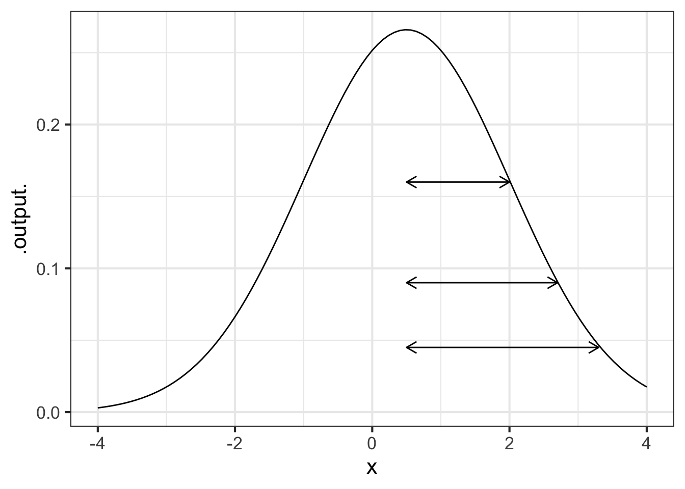
Part A Which arrow shows correctly the width parameter of the gaussian function in the graph with arrows?
top middle bottom none of them
Part B What is the value of center in the graph with arrows?
-2 -1 -0.5 0 0.5 1 2
Exercise 11.16
Each of the curves in the graph is an exponential function \(e^{kt}\), for various values of \(k\).
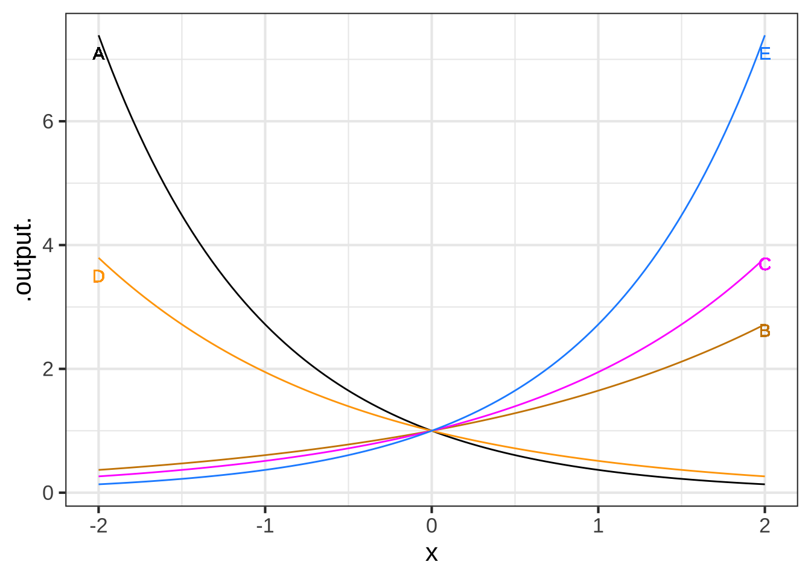
Part A What is the order from \(k\) smallest (most negative) to k largest?
A, D, B, C, E A, B, E, C, D E, C, D, B, A
Exercise 11.17
The graph shows the cumulative number of Ebola cases in Sierra Leone during an outbreak from May 1, 2014 (Day 0) to December 16, 2015. (Source: {MMAC} R package, Joel Kilty and Alex McAllister, Mathematical Modeling and Applied Calculus.) Put aside for the moment that the Ebola data don’t have the exact shape of a sigmoid function, and follow the fitting procedure as best you can.
gf_point(Cases ~ Day, data = MMAC::EbolaSierraLeone)
Part A Where is the top plateau?
None of the above About 14,000 cases About Day 600. About 20,000 cases
Part B Where is the centerline?
Near Day 200 Near Day 300 At about 7000 cases
Part C Now to find the width parameter. The curve looks more classically sigmoid to the left of the centerline than to the right, so follow the curve downward as in Step 4 of the algorithm to find the parameters. What’s a good estimate for width?
About 50 days About 100 days About 10 days About 2500 cases
Cynthia Tedore & Dan-Eric Nilsson (2019) “Avian UV vision enhances leaf surface contrasts in forest environments”, Nature Communications 10:238 -Figure 11.3 and -Figure 11.4 ↩︎
These data, as well as the general idea for the topic come from La Haye and Zizler (2021), “The Lorenz Curve in the Classroom”, The American Statistician, 75(2):217-225↩︎